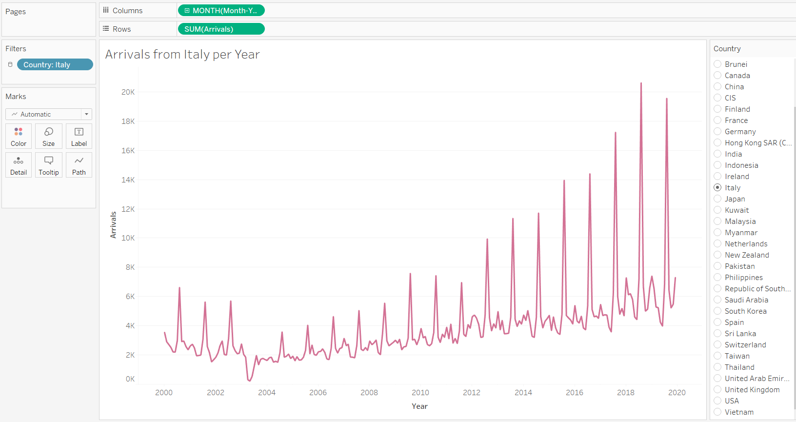
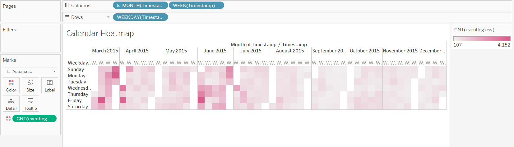
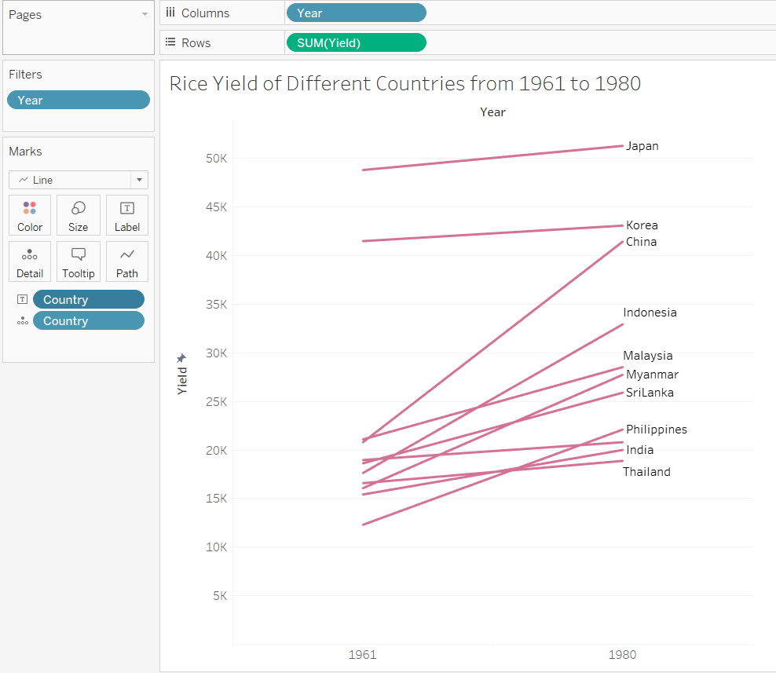
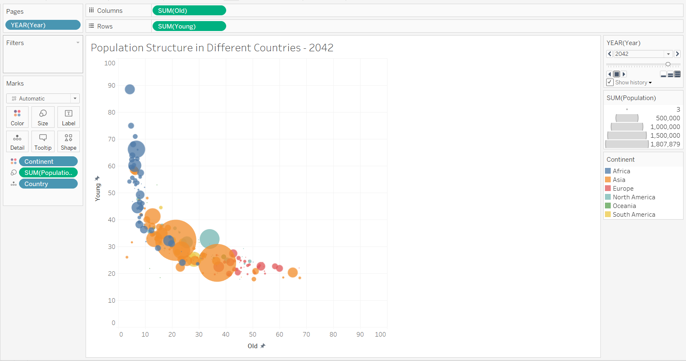

In-class Exercise 6
🔎 Overview
This document serves as my In-class Exercise 5 requirement, following the fourth week of ISSS608 VAA lecture of Professor Kam on February 18, 2023.
Being able to look at the patterns in data over time is an important aspect of analytics, however, time-series data is often not very visually friendly. For this week’s exercise, we explore ways of graphing time, visualization of time-series patterns, and adding interactive techniques.
🖼️ Tableau
Basic Time Series

Cyclical Plot

Completing the Arrivals Dashboard

Calendar Heatmap


Slopegraph


Animated Bubble Plot
